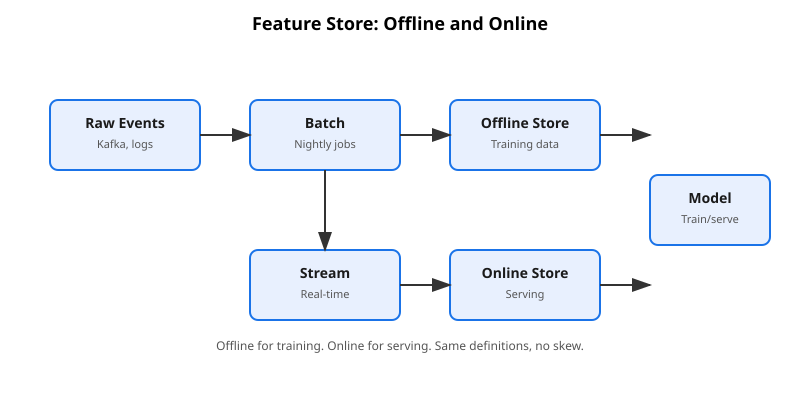
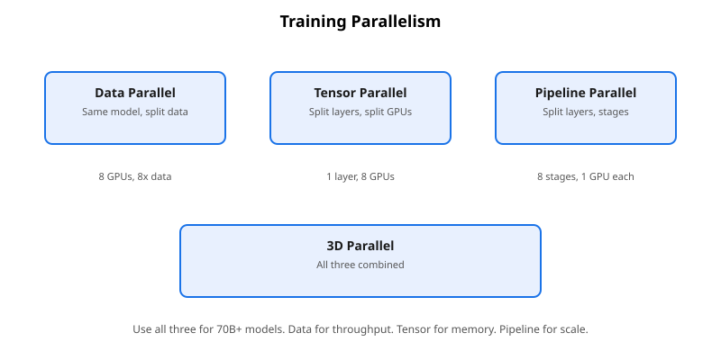
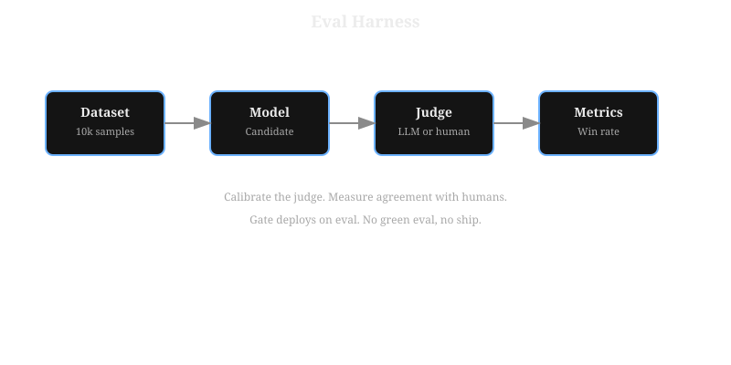
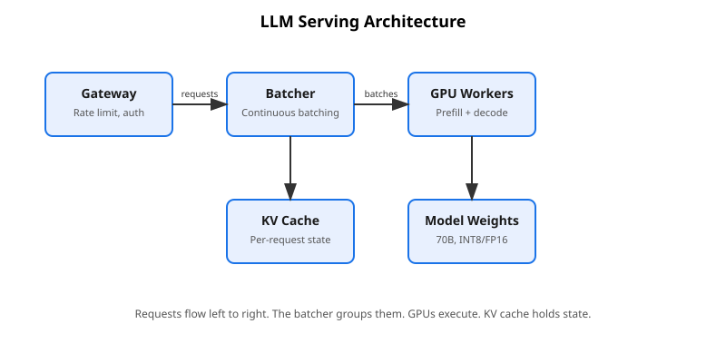
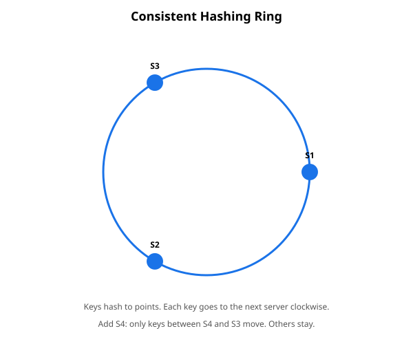
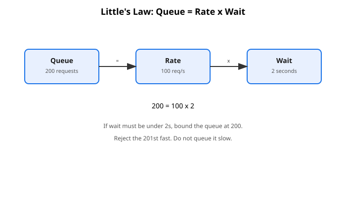
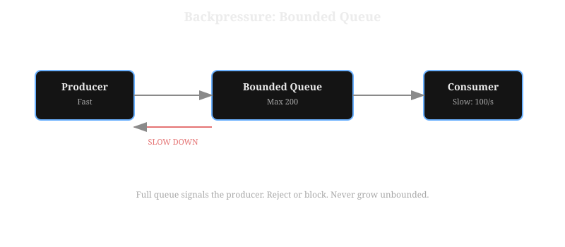
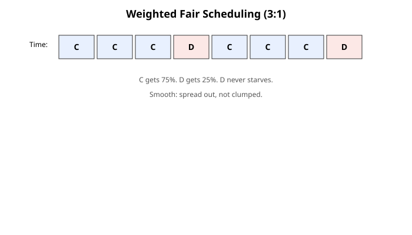
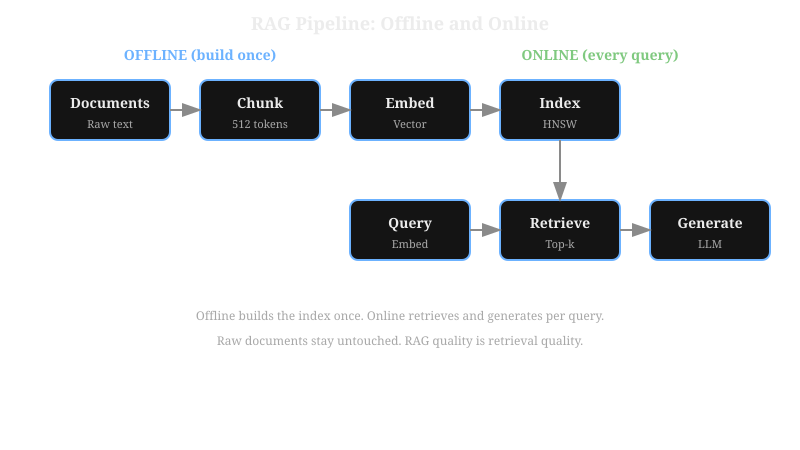
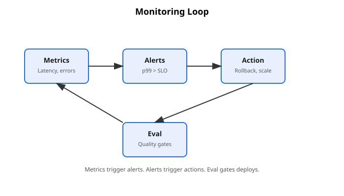

Research-Engineer CurriculumNo. 15 of 39 · Sept 2026 edition
Last verified: September 2026. Live-verified for this volume. NVIDIA H100 SXM specs (80GB HBM3, 3.35 TB/s memory bandwidth, 989 TFLOPS dense FP16) come from NVIDIA's official product page. The 70B-class reference architecture (80 layers, 8192 hidden size, grouped-query attention with 8 KV heads) comes from Meta's published model definitions.
The training-compute estimate C ≈ 6ND comes from Kaplan et al. 2020 scaling-law derivations. Adam optimizer state at 12 bytes per parameter in mixed precision comes from DeepSpeed documentation. Every capacity-lab number is a real output of the embedded script. The script ran locally during the build with the verified constants.
UNVERIFIED: the $2.50/hr GPU price, 40% MFU, 10 GB/s disk speed, and 768-token average context are illustrative (marked inline). So are the $3/1M-token judge pricing and the 5,000 chunks/sec embedding rate. They teach the estimation method, not the market.
This volume asserts no model names, library API signatures, or paper findings beyond the cited sources above.
Contents
- 0. The framework: say the numbers first
- 1. Data: the foundation every design stands on
- 2. Model choice: the smallest model that can do the job
- 3. Training at scale: FLOPs, memory, and time
- 4. Evals: measuring what matters
- 5. Capacity math: serving a 70B model
- 6. Serving at scale: batching, latency, and cost
- 7. RAG systems: retrieval meets generation
- 8. Monitoring and failure modes: what breaks, and how you know
- 9. Question bank: 9 system designs, worked
- 10. Capstone: the full whiteboard run
- 13A. Appendix: Distributed Systems Primitives
- Chapter 1. Consistent hashing
- Chapter 2. Delivery semantics and idempotency
- Chapter 3. Backpressure
- Chapter 4. Fair multi-tenant scheduling and ordered messaging
Design prompt
- Design LLM serving for 40 req/s on a 70B model. Start with the numbers.
- How long does it take to train a 70B model on 2T tokens? Show the FLOPs math.
- Your p99 doubled overnight. Debug it.
- Design a RAG system over 100M documents.
- How do you know your eval measures what you think it measures?
- INT8 quantization: what breaks, and how do you check?
- What is the KV cache, and why does it cap your batch size?
- Design a feature store for real-time ML. What problem does it solve?
- Your model's quality slipped and nobody changed the model. Where do you look?
0. The framework: say the numbers first
A design review is not a contest for pretty diagrams. It is an estimation exercise with boxes. The candidate who draws microservices before doing arithmetic fails. The candidate who does the arithmetic first passes, even with ugly boxes.
Say this: "40 requests per second, 256 output tokens each. A token is roughly a word-piece. It is the unit the model reads and writes. So I need about 10,000 tokens per second of decode throughput."
The framework of this volume is a four-step loop. Requirements lead to numbers. Numbers lead to architecture. Architecture leads to bottlenecks. Bottlenecks lead to cost.
"Design X" stays vague on purpose. The reviewer tests one thing: do you ask for the numbers, or do you skip them? A 70B model serves 40 requests per second. It must batch aggressively.
It must also fit its weights in HBM. HBM is high-bandwidth memory: the fast memory on the GPU package. These are not choices. They are consequences.
Figure 0.1. The loop: every design question runs through these four steps.
How to read this diagram
- Step 1, REQUIREMENTS: question the prompt. Extract QPS, the latency SLO, data scale, and model size. QPS is queries per second. The SLO is the service-level objective: the latency promise you must keep. Write every number the reviewer gives, and flag every number you assumed. If the reviewer will not give numbers, assume out loud.
- Step 2, NUMBERS: turn requirements into resource math.
Compute the load: tokens per second. Compute the work: FLOPs. Compute the size: gigabytes. FLOPs are floating-point operations: the unit of compute work.
The engine is back-of-the-envelope estimation with memorized constants. A 70B model in FP16 is 140 GB of weights. FP16 is 16-bit floating point: 2 bytes per parameter. GPUs give about 3.35 TB/s of HBM bandwidth.
One decode step reads all the weights once. It generates one output token. The KV cache holds the keys and values of generated tokens. The cache grows with the batch size and the sequence length. The cache caps how much you can batch.
Multiply per-request cost by QPS to get the fleet size. Multiply fleet size by price to get the bill.
Every chapter in this volume runs this loop once. Training turns FLOPs into GPU-days. Serving turns tokens-per-second into GPUs. RAG turns documents into index size. Evals turn samples into judge cost.
- Step 3, ARCHITECTURE: draw boxes that serve the numbers. Justify each box from step 2: "I need a router because...", not "systems usually have a router." The boxes serve the math. The math does not serve the boxes.
- Step 4, BOTTLENECKS + COST: break the design on paper before traffic breaks it. Name the first thing that breaks when traffic doubles. Compute the monthly bill. The reviewer will ask for both, so have the answers ready. Then run the loop again on the next question.
A concrete example. "Design a chatbot serving 40 req/s." Step 1: you ask. The reviewer answers: 70B model, 512 input tokens, 256 output tokens, p99 under 2 seconds for the first token.
Step 2: the load is 40 times 256, or 10,240 tokens per second. Each step reads 70 GB of weights at 3.35 TB/s. Tensor parallelism splits the model across 2 GPUs. Each layer splits its matrix multiply across the GPUs.
Each GPU holds half the weights. The step takes about 21 ms per GPU. Batch 24 gives about 1,149 tokens per second on each GPU. That is about 4.5 requests per second for each GPU. So the fleet needs 9 GPUs.
Step 3: draw a router, TP=2 worker pairs, and a KV-cache-aware scheduler. The math says batching decides the design.
Step 4: the KV cache caps the batch at large batch sizes. The bill is 9 times $2.50 per hour: $22.50 per hour. You drew no boxes yet, and you already know the shape of the answer. The framework did that.
Common misunderstanding. "System design is about knowing lots of technologies." No. It is about deriving the design from the numbers. The reviewer does not care whether you name three vector databases. The reviewer cares whether you can compute the index size:
Worked: 100,000,000 × 768 is 76.8 billion values. Times 4 bytes each is 307.2 billion bytes, about 307 GB of vectors. So the index needs sharding. Technologies are interchangeable. Arithmetic is not.
The sentence reviewers listen for this opener. "Let me start with the numbers." Ask for QPS, the latency SLO, and data scale before you touch the whiteboard. If the reviewers will not give numbers, assume out loud. "I assume 40 req/s and a 2-second p99. Stop me if that is wrong."
Design prompt
- "Design a URL shortener." (Wrong volume, but the framework still applies: numbers first. Beginners draw the wrong failure first at this scale.)
- "What numbers do you have memorized for LLM design?" (70B is 140 GB in FP16. HBM gives about 3.35 TB/s. Each step reads all the weights. The KV cache caps the batch. Recite them.)
Lab
- Take a "design X" question. Write the four framework steps on paper before drawing anything. Time yourself. Finish the numbers step in under 5 minutes.
- Memorize the five constants above. Quiz yourself until they are instant.
Next: Chapter 1 covers the source of every number: the data pipeline. It also covers the skew problem that appears at serving time.
1. Data: the foundation every design stands on

How to read this diagram.
- Raw Events: What it is: Kafka logs. Why it exists: source of truth. What breaks if it fails: no features.
- Batch: What it is: nightly jobs. Why it exists: historical features. What breaks if it fails: stale training data.
- Offline Store: What it is: training data. Why it exists: reproducible training. What breaks if it fails: cannot train.
- Stream: What it is: real-time pipeline. Why it exists: fresh features. What breaks if it fails: stale serving.
- Online Store: What it is: low-latency DB. Why it exists: serving needs speed. What breaks if it fails: slow predictions.
Chapter 0 gave the loop: numbers first, always. Every number in that loop comes from somewhere. The somewhere is data. This chapter starts at the source: the pipeline that turns raw events into training examples. It also shows the trap that opens when serving computes the same features in a different way.
Every ML system is two systems: the model, and the data pipeline that feeds it. Reviewers know that most production failures are data failures. So they probe data early, before any talk of GPUs. The vocabulary is small. Get it exact.
A training example is one input paired with its label. A feature is one input signal for the model: a purchase count, a pixel block, a word. The label is the right answer for that example. Ground truth is the set of labels you trust for training and eval. If the labels are wrong, everything downstream is wrong. No architecture fixes that.
Features come from somewhere. Raw events land in a data warehouse: the company's long-term store of historical tables. It is cheap, complete, and slow. Labels come from human annotation, from user behavior, or from existing systems. The training pipeline turns the warehouse tables into training examples. So far, so batch.
Then serving starts, and the trap opens. Training-serving skew is a mismatch. The model sees one set of feature values in training. It sees a different set in production. The classic case: the training pipeline computes "purchases in the last hour" from the warehouse once a day. The serving path computes the same feature from a live event stream with different windowing.
The numbers look similar. They are not the same. The eval passes because it uses the training path. Production quietly degrades. Skew kills quietly. For every feature, compare the two computations.
The feature store is the industry's answer. Now you can name the problem it solves. Training needs historical values. What was the value of this feature at the time of each past event? That is point-in-time correctness. Serving needs the latest value in single-digit milliseconds.
Each path needs its own store. So the feature store is two paths sharing one definition of each feature. The offline path works in batch. It computes features from the warehouse. It writes them to the offline store for training.
The online path works on the event stream. Stream processing: handle each event as it arrives. The path writes the features to the online store for serving. The online store is a low-latency KV store. A KV store is a key-value store: it answers "give me the value for this key" in milliseconds.
Both paths use the same feature definition. So skew cannot hide. At 50k reads/sec, the team shards the online store. Sharding splits the store across many machines. The keys divide across the machines. The hash ring in Appendix 13A routes each key to its machine.
Figure 1.1. The feature store: one feature definition, two paths. The offline path serves training; the online path serves requests.
How to read this diagram
- Two sources, two speeds. Events stream in live. The warehouse holds history. Training needs the past. Serving needs the now.
- The online path (top): events enter the stream processor. It turns each event into features. It writes the features to the online store. The online store is a KV store. It answers reads in milliseconds. Serving reads the store.
- The offline path (bottom): batch compute reads the warehouse. It writes point-in-time features to the offline store. Training reads the store.
- One feature definition bridges both paths. The same code computes each feature. So the training value equals the serving value. This kills skew.
- At scale the online store is sharded: machines share the keys. The hash ring in Appendix 13A routes each key. So the shards divide 50k reads/sec.
A concrete example. Fraud detection. The Q1 numbers: 10k features, 1-minute freshness, 50k reads/sec.
Offline: a nightly job reads the warehouse. It builds point-in-time training rows. Online: a stream processor updates "transactions in the last hour" per card as events arrive. Serving reads the value from the KV store in about 2 ms.
One team skipped the store. It queried the warehouse at serving time instead. Its p99 exceeded the SLO. Warehouses give throughput, not latency.
Common misunderstanding. "The feature store is a database." It is one contract with two paths. The database is the easy part. The hard part is this guarantee: the training value equals the serving value.
[FIELD NOTE] One definition of each feature, used in both paths. When a reviewer asks about a feature store, the reviewer asks how you prevent skew. Answer the skew question first and the storage question second.
Design prompt
- "Design a feature store for real-time ML." (This is the full Q1. You can now answer it from zero.)
- "Your model worked in the eval and fails in production. The model did not change. What do you check first?" (Skew: compare the feature values between the two paths.)
Lab
- Pick 3 features of a product you know. Write the training computation and the serving computation for each. Then find one skew risk.
- Size an online store: 10M keys × 200 bytes = 2 GB. How many shards do you need? Target: 50k reads/sec. One shard handles 10k reads/sec.
Next: Chapter 2 climbs from the baseline to 70B. It finds the smallest model that clears the bar.
2. Model choice: the smallest model that can do the job
Starting with the biggest model is the most expensive mistake in ML system design. Training cost grows with size. Serving cost grows with size.
Chapter 3 covers training cost: compute is 6ND. Chapter 5 covers serving cost. Each step reads all the weights. So the discipline is this: start at the bottom. Move up only when the eval says the quality gain is worth the cost.
Start with the baseline: the simplest thing that could work. A heuristic, a keyword rule, a tiny model. It takes days, not months. It sets the bar for fancier models.
It also gives you a fallback for free (Chapter 8). Without a baseline, a team cannot judge its 70B. Is it brilliant, or just better than nothing?
The requirements from Chapter 0 choose the model family. For fixed categories from text or images, a small specialized model is usually enough. It is also far cheaper. For example: triage this ticket, detect this object.
An LLM is a large language model. Use LLMs for open-ended generation, reasoning, and following instructions. That is what they are for.
RAG = retrieval-augmented generation. Use RAG for knowledge that changes daily. For example: prices, policies, documents. Fine-tuning is too slow for it. Retrieval updates in minutes. Training updates in days.
Then comes the build-vs-buy question. If your data can leave your network, and the latency SLO tolerates an API call, use a managed model API. It skips the entire serving problem. No GPUs. No batching math. No 3 a.m. pages.
If data stays in-house, you own the fleet. The same holds if you need single-digit-millisecond control. Then Chapters 5 and 6 are your life. Name the constraint that forces the choice. Reviewers listen for the constraint, not the brand.
Evals decide. The choice between models is an eval question from Chapter 4, not a taste question. Use the same dataset, the same rubric, and the same judge. Show the cost-per-quality-point. The winner is the cheapest model that clears the bar with margin.
Figure 2.1. The model-choice ladder: start at the baseline, climb only when the eval justifies the cost. The API branch skips the fleet when the constraints allow.
How to read this diagram
- The baseline comes first: days of work. It sets the bar for fancier models. It doubles as the fallback.
- Each step multiplies cost: training uses 6ND, and serving moves weights through memory on every step. Never move up for free.
- The task picks the family: fixed categories get small models. Open-ended generation gets LLMs. Changing knowledge gets RAG.
- API vs own fleet is a constraint decision: data residency and the latency SLO decide. Taste does not.
- Evals arbitrate: same dataset, same judge, same cost-per-quality-point. The cheapest model that clears the bar wins.
A concrete example. Support-ticket triage. Baseline: keyword rules, 70% accuracy, two days of work. Small classifier: 85%.
It trains in an hour on one GPU. It serves on CPU. 70B with prompting: 88%. But it needs the 9-GPU fleet from Chapter 5.
The business needed 80%. So ship the small model. Keep the 70B result on record as the documented ceiling.
Common misunderstanding. "We need the best model." Nobody needs the best model. They need the cheapest model that clears the bar. The reviewer asks about cost-per-quality-point to see whether you think in trade-offs.
[FIELD NOTE] I start with the baseline. I move up until the eval stops justifying the cost. Here is my baseline. Here is the bar. Here is the cost of each step.
Design prompt
- "When would you NOT serve a 70B model?" (When the bar is 80% and the small model hits 85%.)
- "Your knowledge changes daily. Fine-tune or RAG?" (Defend with update-latency numbers, not opinions.)
Lab
- Take a task from your work. Write the baseline in an hour. Define the quality bar. Then price two steps. Training cost is 6ND. Serving cost is GPUs times price.
- Write the one-paragraph build-vs-buy memo. Name the constraint that forces your choice.
Next: Chapter 3 prices the top step: training at scale, in FLOPs, memory, and days.
3. Training at scale: FLOPs, memory, and time

How to read this diagram.
- Data Parallel: What it is: same model, split data. Why it exists: throughput. What breaks if it fails: slow training.
- Tensor Parallel: What it is: splits a layer. It uses many GPUs. Why it exists: model does not fit on one GPU. What breaks if it fails: OOM.
- Pipeline Parallel: What it is: split layers into stages. Why it exists: scale to many GPUs. What breaks if it fails: pipeline bubbles.
Chapter 2 chose the model size. Now comes the bill for training it. This chapter turns that bill into arithmetic for an index card. FLOPs set the budget. Memory sets the minimum cluster. Parallelism sets the tax.
Training a large model is a FLOPs problem with logistics around it. A simple formula sets the total compute. The optimizer state sets the memory. The wall-clock time is the quotient of the two, adjusted for how efficiently your cluster runs. "Train a 70B model" is a nine-figure decision if you get it wrong. The math fits on an index card.
Figure 3.1. The training triangle: compute sets the budget, memory sets the minimum cluster, parallelism sets the efficiency.
How to read this diagram
- Step 1, COMPUTE.
The formula: total training compute.
C ≈ 6NDwhere: C is total training compute in FLOPs. N is the parameter count. D is the training token count. The 6 covers forward and backward passes. (Kaplan 2020 scaling-law derivations.)Worked for 70B params on 2T tokens: 6 × 70×109 × 2×1012 = 6 × 1.4×1023 ≈ 8.4×1023 FLOPs. N and D fix this number. No engineering changes it. The model choice and the data size are the only levers.
- Step 2, MEMORY: the optimizer state dominates.
Adam keeps about 12 bytes per parameter in mixed precision. Mixed precision means 16-bit weights and gradients for speed, with 32-bit optimizer state for stability. Per DeepSpeed documentation: 2 bytes fp16 weights, 2 bytes fp16 gradients, 4+4 bytes fp32 optimizer state.
M ≈ N × 12 byteswhere: M is the memory for weights, gradients, and optimizer state. N is the parameter count. 12 bytes is 2 (fp16 weights) + 2 (fp16 gradients) + 4 + 4 (fp32 optimizer state).Worked: 70×109 × 12 bytes = 840×109 bytes ≈ 840 GB before storing a single activation. This sets the minimum cluster. You cannot train 70B on 8 GPUs (640 GB of HBM) without extreme sharding and offload. ZeRO shards the optimizer state. It spreads the shards across GPUs. It exists because of this bar.
- Step 3, PARALLELISM: three axes, one tax.
Data parallelism splits the data. Each GPU sees a different part. The GPUs average the gradients. It scales throughput best. But each GPU needs the full model.
Tensor parallelism splits layers. It splits one layer across GPUs. Use it when one layer does not fit. Pipeline parallelism: splits layers into stages. It adds pipeline bubbles. Bubbles are idle time while stages wait for each other.
Real clusters combine all three. MFU is the tax on all of it. MFU is model FLOPs utilization: the fraction of peak throughput that training actually sustains.
Take an illustrative 40% of the 989-TFLOPS H100 peak. NVIDIA specs the peak. Verification: September 2026. Per GPU: about 4e14 effective FLOP/s.
- Step 4, TIME: the quotient. T = C ÷ (GPUs × peak × MFU)where: T is the wall-clock training time. C is 8.4×1023 FLOPs (from Step 1). peak is 989 TFLOPS per H100 (NVIDIA spec). MFU is 0.40, model FLOPs utilization. This MFU is illustrative. Real clusters hit 40-60%.
Worked, per GPU: 989×1012 × 0.40 ≈ 4×1014 FLOP/s. Times 1,024 GPUs ≈ 4.1×1017 FLOP/s. 8.4×1023 ÷ 4.1×1017 ≈ 2.05×106 s ≈ 24 days. Cost: 583,000 GPU-hours × $2.50/hr (illustrative) ≈ $1.46M.
The reviewer wanted the 24 days. The candidate who also gives the $1.46M gets the hire signal.
Putting it together. "How long to train 70B on 2T tokens on 1,024 H100s?" The four steps give 8.4e23 FLOPs ÷ (1024 × 4e14 FLOP/s) ≈ 24 days. Cost: about $1.46M, illustrative.
The memory check closes it. About 840 GB of state needs at least 11 GPUs' worth of HBM (80 GB each). 1,024 GPUs satisfy this. ZeRO shards the optimizer state. Memory sets the minimum cluster. FLOPs set the time.
MFU falls as you scale. Doubling GPUs to 2,048 will not halve the 24 days. Communication grows. Compute on each GPU shrinks. Two things communicate: gradient all-reduces and tensor-parallel exchanges.
In a gradient all-reduce, every GPU shares its gradients with every other GPU. All GPUs end with the average. Finding the scaling limit is the art. The math above predicts the limit.
The sentence reviewers listen for: "Training compute is 6ND: 8.4e23 FLOPs for 70B on 2T tokens. At 40% of the 989-TFLOPS peak, 1,024 GPUs need about 24 days. Adam needs 12 bytes per parameter. The optimizer state is the biggest memory user." Then: "Memory sets the minimum cluster. FLOPs set the time. MFU is the tax."
The 6ND formula sets the total budget. The next question is how to split it: between model size and training data. That split is the Chinchilla finding.

Figure 3.2. The Chinchilla finding: for a fixed compute budget, the optimal model is smaller and trained on more tokens than the field believed. The dashed line is Kaplan 2020. 6ND is the budget. This plot shows how to split the budget.
How to read this diagram
- Axes: training compute (FLOPs) runs left to right. Model size (parameters) runs bottom to top. Both use log scale. Moving right means a bigger budget.
- The dashed line is the old belief (Kaplan 2020). It says: bigger models for a given budget. The three solid approaches all predict a lower line. They favor smaller models and longer training.
- The stars are real models. Chinchilla (70B) sits on the new line. Gopher (280B) and GPT-3 (175B) sit above it. They trained too little for their size. Chinchilla still beat them.
- The interview takeaway: when a reviewer asks "how big a model would you train?", start with the compute budget and this trade-off. Do not start with a parameter count.
Design prompt
- "How long does it take to train a 70B model on 2T tokens?" (Speak the full chain. 6ND. 989 TFLOPS × 40% MFU. 24 days on 1,024 GPUs. About $1.46M illustrative. Name the verified constants and the illustrative constants.)
- "Why can't I train 70B on 8 GPUs?" (Memory: about 840 GB of weights, grads, and optimizer state vs 640 GB of HBM. Even with ZeRO and offload, throughput stays miserable. Show the stacked bar.)
Lab
- Recompute the training time for a 7B model on 1T tokens with 256 GPUs at 45% MFU. (Answer: about 4.2e22 FLOPs ÷ (256 × 4.45e14) ≈ 4.3 days.)
- Compute the Adam state memory for a 13B model in mixed precision. How many 80GB GPUs does it take at minimum?
Next: Chapter 4 builds the instrument that judges the training: evals. It decides whether the training was worth it.
4. Evals: measuring what matters

How to read this diagram.
- Dataset: What it is: 10k samples. Why it exists: test cases. What breaks if it fails: no measurement.
- Model: What it is: candidate. Why it exists: what you test. What breaks if it fails: nothing to eval.
- Judge: What it is: LLM or human. Why it exists: scores outputs. What breaks if it fails: bad scores.
- Metrics: What it is: win rate. Why it exists: decision. What breaks if it fails: cannot compare.
Chapters 1 through 3 built the training story: the data, the model size, the compute budget. Nothing in it is trustworthy before measurement. This chapter builds the instrument for everything downstream: the eval. A bad eval is worse than no eval. It manufactures confidence.
An eval is a measurement instrument. Like any instrument, it can go out of calibration. Most ML failures in production are eval failures first.
The model optimized the metric. The metric did not measure what the users needed. Nobody noticed until the complaints arrived. Everything downstream depends on the eval: model selection, launch decisions, regression detection.
So a bad eval is worse than no eval. It manufactures confidence. This chapter builds the instrument in four steps.
Figure 4.1. The eval harness: four parts plus the calibration loop. The loop keeps the judge honest.
How to read this diagram
- Step 1, DATASET: sample real traffic, not textbooks. Anonymize real user prompts. Label what good looks like. If the eval prompts do not look like user prompts, the eval measures a different task. Watch for metric gaming: the model learns to satisfy the judge instead of the user. Then the eval becomes a ceremony.
- Step 2, RUBRIC: make "good" checkable. Vague rubrics produce vague verdicts. Write rubric items for yes-or-no answers. A careful reader grades the items. "Helpful" is not a rubric. "Cites the correct policy section and gives the right final number" is a rubric.
- Step 3, JUDGE: pick the grader, then distrust it precisely.
Use a human, a heuristic, or a model. LLM-as-judge uses a strong model as grader. It is cheap and fast but biased. It favors longer answers, its own style, and confident tone.
Calibrate it. Have the judge grade a few hundred examples that humans also graded. Then measure agreement. If judge-human agreement is 85%, your eval's ceiling is 85%. Never report a win smaller than the judge's own noise.
- Step 4, STATISTICS: buy resolution with samples.
A 2-point win on 100 samples is noise. On 10,000 samples it is signal. The eval is not done until the statistics are.
SE = √(p(1−p)/n)where: p is the true accuracy, n is the sample count, and SE is the standard error of the measured accuracy: the wobble across re-runs.Worked, from the lab hint: p = 0.9, n = 2,000 gives √(0.9 × 0.1 ÷ 2000) = √(0.000045) ≈ 0.0067 ≈ 0.7 points. That is why a 2-point win on 100 samples is noise. On 10,000 samples it is signal.
eval cost = samples × tokens/sample × price per 1M tokenswhere: samples is the eval dataset size. Tokens per sample: judge input, plus output. price is $3/1M tokens (illustrative).Worked: 10,000 × 1,000 × $3/1,000,000 = 10 million tokens at $3 per million. That is about $30 per run with a judge model. Humans cost about $10,000. That is $1 per sample.
That is a 300x gap. Judge models close it. The agreement number is why you calibrate them.
A concrete example. You need to eval a support chatbot.
Dataset: 2,000 real anonymized tickets. Sample them proportionally from each category. That is stratified sampling. Rubric: (1) the final answer matches the resolution in the ticket, (2) it cites the correct policy, (3) no hallucinated order numbers. Judge: a strong model with the rubric in its prompt. Calibrate it against 300 human-graded tickets: agreement 88%.
Statistics: 2,000 samples give a standard error of about 0.7 points on accuracy. Standard error is the wobble across re-runs. So you can resolve 2-point differences. Cost: 2,000 × about 2k tokens (prompt + completion) = 4M tokens, about $12 illustrative per run.
B beats A by 1.5 points. That is below your 2-point resolution. So you call it a tie. Run more samples instead of shipping on noise.
Common misunderstanding. "A bigger benchmark is always better." A bigger benchmark of the wrong task measures the wrong thing with more precision. Validity beats size every time.
Ask: does it measure user needs? The first question about any eval is never "how many samples". It is: show five prompts. For each, say why it matches real use.
The sentence reviewers listen for: "I build evals from real traffic with a checkable rubric. I calibrate the judge against humans. I size the sample count so the statistics resolve the differences I care about. Then the kicker: I never report a win below the judge's noise.
Design prompt
- "How do you know your eval measures what you think it measures?" (Sample from real traffic. Use a checkable rubric. Run judge-human calibration. Then the ultimate test. Does it predict user satisfaction? Track that correlation.)
- "Your judge model favors long answers. What do you do?" (Measure the bias on the calibration set. Add a length penalty or a pairwise comparison to the rubric. Then re-calibrate. Never ignore a known judge bias.)
Lab
- Take 20 prompts from your own usage. Write a checkable rubric for "good answer" (yes-or-no items only). Grade 5 model outputs yourself. Then have a colleague grade the same 5. What is your human-human agreement? That is your ceiling.
- Compute the sample count needed to resolve a 1-point accuracy difference at 95% confidence. (Hint: the standard error of a proportion is sqrt(p(1-p)/n).)
Next: Chapter 5 serves the model. It covers capacity math: 40 req/s on a 70B.
5. Capacity math: serving a 70B model
Chapter 4 built the instrument that judges models. Now the question turns operational: what does it cost to serve the winning model at real traffic? This chapter turns one fact into the full capacity chain. The fact: decode steps read all weights from memory. The chain: step time, batching, KV-cache limits, fleet size, bill.
Serving a large language model is a memory-bandwidth problem with latency around it. Every token the model generates needs one full read of its weights from GPU memory. That fact sets the latency. It sets the throughput per GPU. It sets the fleet size. It sets the bill.
This chapter turns that fact into whiteboard arithmetic. The inputs: 70B parameters × 2 bytes for FP16 = 140 GB of weights. 3.35 TB/s of memory bandwidth on an H100 SXM. NVIDIA published the spec. Verification: September 2026.
The workload: 512 input tokens, 256 output tokens, 40 req/s. The output: 9 GPUs at $22.50/hr. Every step in between is division.
"We need to serve the model" is not a plan. Without this math, teams waste money. Or they under-provision and melt at launch.
Figure 5.1. The capacity chain: each arrow is one division.
How to read this diagram
- Step 1, the atom: step time = weights ÷ bandwidth.
Inference has two phases. Prefill processes the input prompt all at once. It is compute-bound and fast. Decode generates output tokens one at a time.
Each step reads all the weights from HBM. It is memory-bound and slow. Decode dominates cost. So its step time is the atom of serving math. With tensor parallelism across 2 GPUs, each GPU holds 70 GB of weights.
t_step = W ÷ BWwhere: t_step is one decode step. W is weights per GPU: 70 GB with tensor parallelism across 2. BW is HBM bandwidth: 3.35 TB/s (NVIDIA spec).Worked: 70 ÷ 3,350 = 0.0209 s. Decode takes 21 ms per step.
- Step 2, the lever: batching amortizes the step.
One decode step produces one token per request in the batch. So batching amortizes the step across requests.
throughput = B ÷ t_stepwhere: B is the batch size. t_step is 0.0209 s from Step 1.Worked: 24 ÷ 0.0209 ≈ 1,149 tokens per second on one GPU. Batching is the 20x lever. See batch 1 vs 24 in the lab table.
- Step 3, the limiter: the KV cache caps the batch.
Requests cache keys and values. The cache holds the context. The context is the prompt plus all tokens so far. With grouped-query attention (GQA), this costs about 0.25 GB per request. GQA shares KV heads.
It shrinks the cache. Without GQA it costs about 2 GB per request. Then batching barely works. Batch 48 needs 12 GB of cache.
It no longer fits alongside the weights. The table shows batch 48 with the best throughput. It does not fit. Now convert to request units, which is what the SLO uses:
req/s per GPU = throughput ÷ output tokenswhere: throughput is 1,149 tokens per second (from Step 2). output tokens is 256 per request (the SLO average).Worked: 1,149 ÷ 256. That is 4.5 requests per second on one GPU.
- Step 4, the bill. GPUs = target req/s ÷ per-GPU req/swhere: target is 40 requests per second. per-GPU is 4.5 requests per second (from Step 3). Round up: you cannot rent half a GPU.
Worked: 40 ÷ 4.5 ≈ 8.9, so 9 GPUs.
cost/hr = GPUs × $/GPU-hrwhere: the rental price is $2.50 per GPU-hour (illustrative).Worked: 9 × $2.50 per GPU-hour = $22.50 per hour (illustrative). Each arrow in the diagram is one division.
The lab, executed. Below is the real output of the lab script.
v13_capacity_lab.py
It ran during the build with the verified constants. The script sits next to this file. Follow the chain:
Capacity math, from the runnable lab (real output, executed during the build; bandwidth verified against NVIDIA's H100 spec, price illustrative) ──────────────────────────────────────────────────────── 70B FP16 weights: 140 GB -> 2 GPUs tensor-parallel (70 GB each) KV cache per request (768 ctx tokens, GQA): 0.25 GB Decode step time: 20.9 ms per GPU (batch=1 -> 48 tok/s) batch= 1 KV= 0.3GB fits=yes thr= 48 tok/s/GPU -> 0.2 req/s/GPU batch= 8 KV= 2.0GB fits=yes thr= 383 tok/s/GPU -> 1.5 req/s/GPU batch= 24 KV= 6.0GB fits=yes thr= 1149 tok/s/GPU -> 4.5 req/s/GPU batch= 48 KV= 12.1GB fits=NO thr= 2297 tok/s/GPU -> 9.0 req/s/GPU -- sizing for target -- At batch=24: 4.5 req/s per GPU (TP=2 pairs count as 2 GPUs) GPUs for 40 req/s: 8.9 -> ~9 GPUs Cost: 9 x $2.5/hr = $22.50/hr Cost per 1k requests: $0.16 (illustrative) -- drill: what breaks if you change X -- Double output tokens to 512: req/s per GPU halves -> GPUs needed x2. Quantize to INT8 (1 byte/param): weights 70GB, step 10.4ms -> ~2x throughput, quality trade-off TBD by eval (Ch 4). p99 latency: batch=48 waits to FILL the batch -> queueing delay; throughput up, tail latency up. Pick batch by SLO, not by max throughput.
Reading the output. The method is the durable skill: weights → bandwidth → batch → fleet → cost. The bandwidth figure comes from NVIDIA spec. The $2.50 price is illustrative. That is per GPU-hour.
Two findings hide in the table. Batch 48 has the best throughput and does not fit. The KV cache is the binding constraint, not compute. Batching is a 20x throughput lever: batch 1 vs 24.
Bigger batches are not always better. A big batch waits to fill. That adds queueing delay. Queueing delay raises p99 latency. p99 is the latency that 99% of requests beat. It is the tail that users feel.
Pick the batch by the SLO, not by the max throughput number. Throughput you cannot serve is not throughput.
Quantization shrinks the weights. It cuts the byte count. INT8 uses 1 byte per parameter. FP16 uses 2. The drill below shows throughput almost twice as high. Chapter 4's evals handle the quality check.
The sentence reviewers listen for: "Decode is memory-bound. Each step reads all the weights. So step time is weights over bandwidth: about 21 ms here. Batching amortizes that across requests. The KV cache caps the batch." Then the punchline: "40 requests need 9 GPUs. That is about $22.50 an hour."
Design prompt
"Design LLM serving for 40 requests per second on a 70B model." (Walk the full chain. 140 GB weights. 3.35 TB/s. 21 ms steps.
Batch 24. 4.5 per GPU. 9 GPUs. $22.50/hr. Say which constants are verified and which are illustrative.)
- "What breaks if output length doubles to 512?" (Per-GPU requests halve. GPUs needed double. Output length sets the cost. Input length does not.)
Lab
- Run the lab script yourself.
v13_capacity_lab.py
Change the target to 200 req/s and the output length to 512. Watch the GPU count and per-1k cost move.
- Change precision to INT8 (1 byte per parameter) in the script. The lab cannot measure one thing: the quality impact. Only evals can measure it.
"""Vol 13 labs: serving capacity calculator + cost/latency drill. Illustrative hardware constants (labeled in the chapter); the MATH is the lesson. Run: python3 v13_capacity_lab.py """ # ---- hardware constants ---- # GPU_BW_TBs VERIFIED Sept 2026: NVIDIA H100 SXM spec = 80GB HBM3, 3.35 TB/s # (also 989 TFLOPS dense FP16). GPU_PRICE_HR is ILLUSTRATIVE (market varies; # a 2026 RunPod guide lists H100 from $1.99/hr community cloud) ---- GPU_MEM_GB = 80.0 # H100 SXM (verified: NVIDIA spec) GPU_BW_TBs = 3.35 # memory bandwidth, TB/s (verified: NVIDIA spec) GPU_PRICE_HR = 2.50 # $/GPU-hour (illustrative rental price) MODEL_PARAMS_B = 70.0 BYTES_PER_PARAM = 2.0 # FP16 N_LAYERS, HIDDEN = 80, 8192 # GQA (Vol 4): only 8 KV heads, not 64 -> KV cache is 8x smaller than MHA. # Without GQA, serving a 70B model barely batches at all (see drill below). KV_HEADS, Q_HEADS = 8, 64 KV_BYTES_PER_TOKEN = 2 * N_LAYERS * (HIDDEN * KV_HEADS // Q_HEADS) * BYTES_PER_PARAM AVG_IN_TOK, AVG_OUT_TOK = 512, 256 TARGET_RPS = 40.0 # requests per second weights_gb = MODEL_PARAMS_B * 1e9 * BYTES_PER_PARAM / 1e9 kv_per_seq_gb = KV_BYTES_PER_TOKEN * (AVG_IN_TOK + AVG_OUT_TOK) / 1e9 print(f"70B FP16 weights: {weights_gb:.0f} GB -> min GPUs for weights: {weights_gb/GPU_MEM_GB:.1f} (use 2, tensor-parallel)") print(f"KV cache per request ({AVG_IN_TOK+AVG_OUT_TOK} ctx tokens, GQA): {kv_per_seq_gb:.2f} GB") mha_kv = 2 * N_LAYERS * HIDDEN * BYTES_PER_PARAM * (AVG_IN_TOK + AVG_OUT_TOK) / 1e9 print(f"Same cache with full MHA (no GQA): {mha_kv:.2f} GB/req -- GQA is why 70B serving batches at all (Vol 4).") # Per-GPU decode throughput: each step reads all weights once from HBM. sec_per_step = weights_gb / (GPU_BW_TBs * 1000) print(f"\nDecode step time (weights/BW): {sec_per_step*1000:.1f} ms (batch=1 -> {1/sec_per_step:.0f} tok/s)") print("\n-- batching trade-off per GPU (TP=2: 70GB weights per GPU) --") w_per_gpu = weights_gb / 2 sec_per_step = w_per_gpu / (GPU_BW_TBs * 1000) for batch in [1, 8, 24, 48]: kv_total = batch * kv_per_seq_gb fits = kv_total + w_per_gpu < GPU_MEM_GB - 2 # 2GB reserve for activations/CUDA tok_per_s = batch / sec_per_step rps = tok_per_s / AVG_OUT_TOK print(f"batch={batch:3d} KV={kv_total:5.1f}GB fits={'yes' if fits else 'NO '} " f"thr={tok_per_s:6.0f} tok/s/GPU -> {rps:5.1f} req/s/GPU") print("\n-- sizing for target --") rps_per_gpu = 24 / sec_per_step / AVG_OUT_TOK # batch=24 row n_gpu = TARGET_RPS / rps_per_gpu print(f"At batch=24: {rps_per_gpu:.1f} req/s per GPU (TP=2 pairs count as 2 GPUs)") print(f"GPUs for {TARGET_RPS:.0f} req/s: {n_gpu:.1f} -> ~{int(n_gpu+0.99)} GPUs") print(f"Cost: {int(n_gpu+0.99)} x ${GPU_PRICE_HR}/hr = ${int(n_gpu+0.99)*GPU_PRICE_HR:.2f}/hr") per_1k = int(n_gpu+0.99) * GPU_PRICE_HR / (TARGET_RPS * 3600) * 1000 print(f"Cost per 1k requests: ${per_1k:.2f} (illustrative)") print("\n-- drill: what breaks if you change X --") print(f"Double output tokens to 512: req/s per GPU halves -> GPUs needed x2.") print(f"Quantize to INT8 (1 byte/param): weights {weights_gb/2:.0f}GB, step {w_per_gpu/2/(GPU_BW_TBs*1000)*1000:.1f}ms -> ~2x throughput, quality trade-off TBD by eval (Ch 4).") print(f"p99 latency: batch=48 waits to FILL the batch -> queueing delay; throughput up, tail latency up. Pick batch by SLO, not by max throughput.")
Next: Chapter 6 leaves steady state behind. It covers queues and tail latency. It also covers the cost model.
6. Serving at scale: batching, latency, and cost

How to read this diagram.
- Gateway: What it is: the entry point. Why it exists: rate limiting and auth. What breaks if it fails: no requests get in.
- Batcher: What it is: groups requests. Why it exists: GPUs need batches for efficiency. What breaks if it fails: low throughput.
- GPU Workers: What it is: runs prefill and decode. Why it exists: the actual computation. What breaks if it fails: no outputs.
- KV Cache: What it is: per-request attention state. Why it exists: avoids recomputation. What breaks if it fails: slow decode.
Chapter 5 did the capacity math for a fixed batch. This chapter covers the dynamics. It shows how requests actually flow. It explains tail latency.
It shows how to reason about cost per request. Think of a serving system as a queue in front of a batcher in front of GPUs. You cannot improve all three at once. Every design decision picks the trade.
Chapter 5's steady state never exists. Real traffic bursts. Output lengths vary a lot. The p99 user feels the queue, not the average. Systems that survive production design for the tail.
Figure 6.1. The serving stack: the router, the batcher, and the scheduler that prevents OOMs.
How to read this diagram
- Step 1, REQUESTS: bursts arrive. Client traffic does not arrive evenly. The router sees the queue depth. Queueing delay is part of p99, not just model time.
- Step 2, ROUTER.
Keep decode saturated. Avoid static-batch waste. Static batching waits for a full batch. The whole batch waits for its slowest request. Those are wasted steps.
With continuous batching, finished requests leave at every decode step. New ones enter. No step is wasted.
The router packs requests dynamically. It routes to the worker with the most free memory. It owns the autoscaling signals. Watch queue depth and time-to-first-token (TTFT). TTFT measures time to the first token.
It does not watch GPU utilization. Idle-looking GPUs with a waiting queue mean you are already late. Cold start loads 140 GB of weights. It takes minutes. So keep warm spares or accept slow scale-up.
- Step 3, WORKERS: admit on peak future cache, not current use. Each worker holds a 70 GB weight shard (tensor-parallel pairs) plus its KV cache. Each request's cache grows as it generates. The scheduler admits a request only when its peak cache fits.
Peak cache means the cache at max output length. Admitting on current use fails. It runs out of memory mid-generation.
- Step 4, RESPONSES + the SLO truth: read the physics before promising. L ≈ queueing + prefill + (out_tokens × t_step)where: L is per-request latency. queueing is the wait for a free slot. prefill is one-time prompt processing. out_tokens is tokens generated. t_step is 21 ms from Chapter 5.
Worked: 256 × 21 ms = 5,376 ms. That is 5.4 seconds of full generation. Physics sets this floor. No design changes it. So full generation is out.
For chat, the SLO covers streaming. It means TTFT and inter-token latency. Catch that impossibility before designing. That is the senior move.
The cost math: cost per 1k requests = (GPUs × $/GPU-hr) ÷ (req/s × 3.6). The levers, in order of size: batching (20x). Output length (linear: halve the tokens, halve the cost). KV-cache efficiency (GQA). Precision (2x, with quality risk).
Prefix caching (it reuses prefill for repeated prompt prefixes). Cheaper GPUs (spot, older gen).
Latency and throughput are two ends of one problem. Every throughput lever is also a latency lever. Bigger batches mean more queueing. The batch size is the dial that trades them.
Drill 4: pick the batch size for p99 under 2 s at 40 req/s

How to read this diagram.
- Ring: What it is: hash space as a circle. Why it exists: minimal remapping. What breaks if it fails: all keys move.
- Servers: What it is: points on the ring. Why it exists: own key ranges. What breaks if it fails: unbalanced load.
- Keys: What it is: each key goes to a point. Why it exists: deterministic placement. What breaks if it fails: cannot find data.

How to read this diagram.
- Queue: What it is: requests that wait. Why it exists: buffer. What breaks if it fails: unbounded growth.
- Rate: What it is: arrivals per second. Why it exists: demand. What breaks if it fails: miscalculation.
- Wait: What it is: acceptable latency. Why it exists: SLO. What breaks if it fails: missed SLO.

How to read this diagram.
- Producer: What it is: fast sender. Why it exists: generates work. What breaks if it fails: no work.
- Bounded Queue: What it is: max 200 buffer. Why it exists: absorbs bursts. What breaks if it fails: OOM crash.
- Consumer: What it is: slow worker. Why it exists: does the work. What breaks if it fails: queue fills.
- Signal: What it is: slow-down message. Why it exists: prevents overload. What breaks if it fails: crash.

How to read this diagram.
- Timeline: What it is: 8 time slots. Why it exists: shows the schedule. What breaks if it fails: unfairness.
- Team C: What it is: weight 3. Why it exists: bigger share. What breaks if it fails: underutilized.
- Team D: What it is: weight 1. Why it exists: guaranteed share. What breaks if it fails: starvation.
From the lab table: batch 24 gives 4.5 per GPU at about 21 ms steps. 9 GPUs serve 40 requests per second. Latency per request ≈ queueing + prefill + 256 tokens × 20.9 ms ≈ queueing + prefill + 5.4 s? No. 256 decode steps × 20.9 ms is 5.4 seconds. That breaks the 2 s SLO.
Catch the error. With continuous batching, per-token latency is what matters for streaming. The real SLO for chat is TTFT and inter-token latency. This is the correction a strong candidate makes mid-answer.
Answer: "At 256 output tokens and 20.9 ms per step, 2 s full-generation p99 is impossible. The SLO means TTFT and inter-token latency for streaming. Or it means far fewer output tokens. I clarify the SLO first.
Then I set the batch. Watch queueing delay. It sets TTFT. If they insist on 2 s for full generation, the answer is: impossible at this output length. Here is the math."

How to read this diagram
- 5.4 s is the floor: 256 steps times 20.9 ms.
- The 2 s SLO cannot mean full generation.
- The fix: the SLO means TTFT and inter-token latency. Do the math and push back. That is senior behavior.
Drill 5: the one-minute cost model (memorize this)
Worked: 9 × $2.50 ÷ (40 × 3.6) = $22.50 ÷ 144. That is about $0.16 per 1k requests (illustrative).
The levers, in order of size:
- Batching (20x, Ch 5)
- Output length (linear)
- KV-cache efficiency (GQA)
- Precision (2x, quality risk)
- Prefix caching (prefill only)
- Cheaper GPUs (spot, older gen)
The sentence reviewers listen for: "I clarify whether the SLO is time-to-first-token or full generation. At 256 tokens the physics says 5.4 seconds minimum." Then: "Here is the cost model. Here are the levers in order."

Figure 6.2. KV-cache fragmentation. A wastes slots. Internal fragmentation: 2,038 slots never used.
Free memory sits in gaps. The gaps sit between live requests. No single request can use it. That is external fragmentation.
The raw math overstates the batch. It is why the scheduler admits on peak future cache.
How to read this diagram
- The strip is GPU memory for KV-cache slots. A's prompt fills the first 7 slots. Its generated tokens grow into the reserved region beside them.
- Internal fragmentation: 2,038 slots sit in the brown reserved block. Request A leaves them unused. Reserved is not free: nothing else can claim it.
- External fragmentation: the white gaps are free but scattered. They are too small and too split up for a new request. A new request needs contiguous slots.
- The scheduler's lesson: free memory on paper is not usable memory. Admit on peak future cache. See Step 3. The fragments will not save you.
Design prompt
"Your p99 doubled overnight. Debug it." (Checklist. Traffic spike? Batch config change?
A new long-output use case? KV-cache evictions? Router regression? Walk it in order. Name the dashboard you check for each.)
"Drill 2: p99 doubled after an INT8 quantization change. Debug it." (The trap: quantization cuts latency. Half the weights means half the step time. So the model is innocent until proven guilty.
Check the serving stack diff that shipped with the quantization. Check the new router version. Check the new batching config. Verify with an A/B: same traffic, FP16 vs INT8, same batch cap.)
Lab
- Extend the lab script.
v13_capacity_lab.py
Add a queueing model. M/D/1: random arrivals, fixed service time. Plot p99 by batch size. At 40 requests per second. Find the batch that minimizes p99. Is it the max-throughput batch?
- Price the INT8 switch end to end: half the step time, same fleet. What is the new cost per 1k? What eval runs before shipping it?
Next: Chapter 7 answers what the model does not know. It covers RAG over 100M documents.

How to read this diagram
- The formula: GPUs times dollars per GPU-hour, divided by requests per second times 3.6
- The worked row: 9 GPUs at $2.50/hr serving 40 req/s
- The levers come in order. Batching first, 20x, then the rest.
7. RAG systems: retrieval meets generation

How to read this diagram.
- Documents: What it is: raw text. Why it exists: the knowledge source. What breaks if it fails: nothing to retrieve.
- Chunk: What it is: 512-token pieces. Why it exists: embeddings need fixed size. What breaks if it fails: bad retrieval.
- Embed: What it is: vector conversion. Why it exists: semantic search. What breaks if it fails: no similarity.
- Index: What it is: HNSW structure. Why it exists: fast nearest neighbor. What breaks if it fails: slow queries.
- Retrieve: What it is: top-k search. Why it exists: finds relevant chunks. What breaks if it fails: wrong context.
- Generate: What it is: LLM with context. Why it exists: answers from retrieved docs. What breaks if it fails: hallucinations.
Chapter 6 closed the serving dynamics: queues, tails, and the cost of every request. One question stayed open the whole time: what happens when the model does not know the answer? Retraining for every new fact is too slow and too expensive. This chapter decouples knowledge from reasoning. Retrieve the documents at query time. Put them in the prompt.
RAG (retrieval-augmented generation) is the standard answer to "the model does not know my data". Instead of training the knowledge in, you retrieve relevant documents at query time and put them in the prompt.
Fine-tuning trains a model further on new data. It changes the model's behavior. It cannot keep up with changing data. A 100M-document corpus never fits in context.
RAG decouples knowledge from reasoning. Knowledge lives in the index. Update it by re-ingesting. The model does the reasoning at query time.
RAG also makes answers attributable. The model can cite the chunk it used. That is the only scalable antidote to hallucination in knowledge tasks. Hallucination is the model stating false things with confidence. RAG is the highest-leverage architecture in applied LLM work. Its failure modes are almost all in the retrieval half, not the generation half.
Figure 7.1. The RAG pipeline. Quality lives in the retrieval half. Cost lives in the index.

Figure 7.2. The same five stages at industrial scale, from NVIDIA's RAG explainer. Extraction, filtering, and chunking on the ingestion path. Embedding, vector search, and reranking on the retrieval path. A data feedback loop.
Source: NVIDIA Technical Blog, 2024. Image downloaded and hosted locally; never hotlinked.
How to read this diagram
- Step 1, INGEST → CHUNK: cut the corpus into retrievable pieces. Documents become overlapping chunks. Chunking is the first quality lever. Large chunks dilute the signal. The relevant sentence drowns in boilerplate.
Small chunks lose context. The answer needs the surrounding paragraph. Overlap chunks by about 10%. Then no key sentence splits at a boundary. Tune this before touching the model.
- Step 2, EMBED → INDEX: teach the system what "similar" means.
The embedding model converts chunks to vectors. Train or fine-tune it on your domain's notion of relevance. A generic embedder retrieves generically. Exact search over 200M vectors is too slow.
So the index uses ANN to return the top-k. ANN is approximate nearest neighbor. HNSW and IVF are popular ANN structures. It gives about 95%+ recall at millisecond latency. Top-k means the k most similar chunks.
The size math forces the architecture:
index bytes = chunks × dims × bytes/valuewhere: chunks is 200M. dims is 768. Each value is 4 bytes (fp32).Worked: 200,000,000 × 768 = 153.6 billion values. Times 4 bytes = 614.4 billion bytes ≈ 600 GB raw. So the index needs sharding, product quantization, or both. It compresses each vector into short codes. It makes the index about 8x smaller.
- Step 3, RETRIEVE → GENERATE: answer from evidence, with receipts. The query becomes a vector. The index returns the top-k chunks in milliseconds. The model answers from the chunks with citations. Verify citations mechanically: does the cited chunk contain the claim?
- Step 4, the eval loop: split the blame. Measure retrieval recall and faithfulness separately. Recall@k is the fraction of queries where the right chunk lands in the top-k. Faithfulness asks: does the answer match the chunks?
Conflating them is the standard mistake. A bad answer can mean the retriever failed. Or the generator misread. The fix depends on which half broke. The loop feeds back to chunking and the embedder, not the generator. Most RAG failures are retrieval failures.

Figure 7.3. The same five stages, drawn clean. Build the index once (offline). Retrieve on every query (online). Two lessons in the footer: raw documents stay untouched, and RAG quality is retrieval quality.
How to read this diagram
- Top row, offline: Cut source documents into about 512-token chunks. Embed them. Store them in the vector index. The index uses ANN (HNSW or IVF). This runs once, then incrementally.
- Bottom row, online: embed the user query with the same model. The index returns the top-k passages. The LLM gets the question plus the passages, not the raw corpus.
- The footer is the exam. Raw docs stay untouched. That is why 100M documents fit in a millisecond lookup. So the eval splits the two. It measures retrieval recall and generation faithfulness separately.
A concrete example. "Design RAG over 100M support articles."
Ingest: 100M articles ÷ about 500 tokens per chunk ≈ 200M chunks. Some articles split. Some are short.
Embed: 768-dim vectors × 4 bytes × 200M = 614 GB raw. With product quantization: about 75 GB, sharded across 4 index nodes. Retrieve: HNSW index, top-8 chunks, p99 about 30 ms. Generate: 70B model. Prompt = query + 8 chunks (about 4k tokens). Answer with citations.
Two evals: recall@8 and faithfulness. Is the gold article in the 8? Faithfulness asks: does the answer match the chunks?
When faithfulness fails but recall passes, the bug is in the generator prompt. When recall fails, the bug is chunking or the embedder. You now know which half to fix. No guessing.
The pipeline above is the engineering view. The original paper gives the probabilistic view. The retriever is non-parametric memory. The generator is parametric memory. Training updates both end to end.

Figure 7.4. From the original RAG paper (Lewis 2020). The retriever is non-parametric memory: knowledge lives in the document index, not the weights. The generator is parametric memory: knowledge lives in the model weights. MIPS picks the documents with the largest dot product against the query vector, and the generator marginalizes over the top documents. It averages, weighted by retrieval score.
How to read this diagram. Training updates both halves end to end.
- Left to right: the query x becomes a vector. The vector is q(x). MIPS searches the document index for the closest documents z. The index is the non-parametric memory.
- The two memories: the index holds knowledge. Update it by re-indexing (minutes). The generator's weights hold knowledge. Update them by training (days). RAG is the combination.
- Marginalize: the generator reads the query plus each retrieved document. It averages the answers, weighted by retrieval score. No single document has to be perfect.
- The dashed arrow on top: backprop runs end to end through q and p-theta. A wrong answer updates the retriever too, not just the generator.
- The examples on the sides (question answering, fact verification, question generation) are the task family. They are knowledge questions with checkable answers.
Common misunderstanding. "RAG quality is about the LLM." The LLM is rarely the bottleneck. Right chunks in, good answers out. Wrong chunks in, confident hallucinations out.
Some teams upgrade the generator three times. They ignore retrieval recall. They waste money. Measure recall first. It is usually the problem.
The sentence reviewers listen for: "I split RAG eval into retrieval recall and generation faithfulness. The fix depends on which half failed." Then the numbers: "200M chunks at 768 dims is about 600 GB raw. So the index needs quantization and sharding."
Design prompt
"Design a RAG system over 100M documents." (Walk the pipeline with numbers. Chunks. Vector bytes.
Shards. Retrieval latency. Citation verification. Split the eval.)
- "The answers are wrong. Retrieval or generation?" (Check recall first. Is the gold chunk in the top-k? If yes, fix the generator prompt. If no, fix chunking or the embedder.)
Lab
- Build a toy RAG. Chunk 50 documents two ways: large chunks vs small overlapping chunks. Embed with any open embedder. Compare recall on 20 questions. Which chunking wins, and by how much?
- Compute the index size for 10M chunks at 1024 dims in fp32. Then do it for int8-quantized. When does the index stop fitting on one machine?
Next: Chapter 8 ships it. It covers monitoring, drift, and the failure modes.
8. Monitoring and failure modes: what breaks, and how you know

How to read this diagram.
- Metrics: What it is: latency, errors. Why it exists: visibility. What breaks if it fails: flying blind.
- Alerts: What it is: p99 over SLO. Why it exists: wake someone up. What breaks if it fails: silent outages.
- Action: What it is: rollback or scale. Why it exists: fix it. What breaks if it fails: prolonged outage.
- Eval: What it is: quality gates. Why it exists: prevent bad deploys. What breaks if it fails: quality drops.
Chapter 7 built the RAG system. Chapters 5 and 6 sized and priced the serving fleet. Now everything is live. Live systems break in ways no whiteboard predicts. This chapter is the second half of every design: how you know the system is healthy, and what happens when it is not.
Shipping is the middle of the story, not the end. The reviewer will ask two questions: how do you know the system is healthy, and what happens when it is not? Monitoring answers the first. Failure modes answer the second. Design both. Do not improvise.
Watch the four signals. Every serving system watches the same four:
| Signal | What it measures | What it catches |
|---|---|---|
| Volume | Requests per second | Traffic spikes or drops vs expected |
| Latency | p50 (the median user) and p99 (the tail user, Chapter 5) | Slowdowns, queueing, bad deploys |
| Errors | The fraction of failed requests | Outages, bad deploys, dependency failures |
| Cost | Dollars per 1k requests, from Chapter 6's model | Silent budget burn |
A dashboard nobody looks at is decoration. Each signal gets an alert threshold. Each alert names the person who owns it.
Then watch the quality. The four signals catch outages, not quiet decay. Sample production traffic. Run the eval harness (Chapter 4) on it continuously. And watch the inputs.
Data drift is when the serving distribution moves away from the training distribution. The figure below shows drift. The same feature, two histograms, the mean shifted right. The model trained on the blue world. It now serves the orange one.
When drift crosses a threshold, the model's world changed. The model must change with it. Retrain, adapt, or at least investigate.

Figure 8.1. Feature drift: the serving distribution (orange) moved away from the training baseline (blue). The model learned the blue world. It now lives in the orange one.
How to read this diagram
- Two histograms, one feature. Blue is the training baseline. Orange is this week's serving traffic. Same feature, same axis.
- The mean shifted right. The dashed lines mark the two means. Serving values run larger now. Larger than anything the model mostly trained on.
- The response is a decision, not a dashboard. Cross the threshold and you retrain, adapt, or investigate. Drift is the trigger. Eval on sampled traffic shows the trend. The trend confirms whether quality actually fell.
Now the failure modes. Three classics.
A cascading failure is when one slow dependency backs up everything behind it. The queue grows (Appendix 13A, Chapter 3). Timeouts fire. A sick downstream takes down healthy upstreams.
A retry storm is when clients retry failed requests and the retries become the load that kills the system. The cure becomes the disease.
The defense for both is the same family: bounded queues, backpressure, timeouts, and retries with backoff and limits. Never unbounded.
And the fallback: the simpler path the system takes when the model path fails. A cached answer, a smaller model, the baseline heuristic from Chapter 2, a human review queue.
Graceful degradation is the property that the system gets worse smoothly instead of all at once. Slow the stream. Shed the expensive features. Answer from cache.
Design the fallback before you need it. You will need it at 3 a.m. And 3 a.m. is a bad time to design.
Figure 8.2. The cascade: one slow model backs up the queue, timeouts fire, retries multiply the load.
How to read this diagram. The defenses are one family. Bound it. Time it out. Retry with limits. Fall back.
- The happy path (top): client, gateway, model. One slow model is all it takes.
- The queue grows: requests pile up behind the slow dependency. Appendix 13A and Chapter 3 give bounded queues and backpressure for exactly this.
- Timeouts fire: waiting clients give up. That looks like errors. That triggers the next step.
- The retry storm: clients retry. The retries are new load on an already sick system. The cure becomes the disease.
- The defenses (right): bound the queue. Time out fast. Retry with a limit and a backoff. Keep a fallback warm: cache, smaller model, human review.
A concrete example. Q6's p99 doubled. Here is the resolved story. Traffic looked normal.
The output-length histogram had shifted. A new use case sent 2k-token requests into the same pool. It clogged every batch.
The fix: route long requests to a separate pool with its own batching. The reviewer wants this lesson. Debug in this order.
Traffic. Queueing. Stack diff. A/B.
That is Chapter 6's checklist. The monitor that caught it was the output-length histogram, not the GPU dashboard.
Common misunderstanding. "Monitoring is dashboards." Dashboards are for diagnosis. Alerts are for detection. And "retries always help": retries multiply load. So every retry policy needs a limit and a backoff. Or it is a retry storm waiting for a bad day.
[FIELD NOTE] Every design answer ends with two sentences. Here is what I watch. Here is what happens when it breaks. If you cannot say both, the design is not done.
Design prompt
- "The model's quality dropped. Nobody changed the model. Debug it." (This is Q9. Check drift, then skew, then regression.)
- "Design the fallback for a fraud model that must never go down." (Cache, smaller model, human review. That is graceful degradation by design.)
Lab
- Instrument the capacity lab. Add an alert threshold on p99. Simulate a traffic spike and a drift shift. Write the runbook: who gets paged, and what do they check first?
- Draw your own Figure 8.2 for a system you run. Name the slow dependency most likely to start the cascade.
Next: Chapter 9 drills the whole framework. Nine system designs, worked.
9. Question bank: 9 system designs, worked
Chapters 0 through 8 taught one framework and applied it eight ways. This chapter is the drill ground. Nine real design questions. Each is the same framework applied once more. Each has a worked answer skeleton. Check yourself against it.
Nine questions, each with a worked answer skeleton. The pattern is always the framework from Chapter 0. Numbers first, then architecture, then bottlenecks, then cost.
Read the question. Try the whiteboard yourself. Then reveal the answer and compare. Did you start with the numbers?
When the math says impossible, say so with the arithmetic. Impossible means 2 s full generation at 256 tokens, or a 1M-token context on one GPU. Push back with numbers. That is the strongest signal in the design review.
Figure 9.1. The bank: each question is an instance of the framework.
How to read this diagram
- Each card names a question and the chapters that supply its math. The mapping is the point. There are no new ideas in the bank. Only the framework applied nine times.
- Use it as a drill: cover the answer. Do the numbers step on paper. Then reveal. If your numbers match, the architecture almost designs itself.
Q1. "Design a feature store for real-time ML."
Numbers first: ask four things. How many features. What freshness.
What read QPS. How many models consume it. Freshness in seconds or minutes. Assume 10k features, 1-minute freshness, 50k reads per sec.
Architecture: the feature store from Chapter 1. One definition of each feature, two paths. The offline path computes features for training. It uses point-in-time values from the warehouse. The online path computes the same features from the event stream into a sharded KV store for serving.
1 minute of freshness means one thing. Keys update within 60 seconds of the event.
Bottlenecks + cost: the freshness SLO forces the streaming path. The KV store shards by read QPS. The classic failure is skew. Solve it with point-in-time joins. Say so unprompted.
Q2. "Design LLM serving for 40 requests per second on a 70B model."
Numbers first: 140 GB weights (FP16). 3.35 TB per second of bandwidth gives about 21 ms decode steps. Batch 24 gives about 1,149 tokens per second per GPU. That is 4.5 requests per second per GPU. 40 / 4.5 is about 9 GPUs. $22.50/hr illustrative.
Architecture: router with continuous batching. Worker pairs with TP=2 (70 GB shards). A scheduler that watches the KV cache. It admits on peak future cache. Autoscaling on queue depth.
Bottlenecks + cost: KV cache caps the batch. Output length drives cost linearly. The chat SLO is TTFT, not full generation. 5.4 s at 256 tokens by physics. This is Chapters 5 and 6, applied.
Q3. "Design a RAG system over 100M documents."
Numbers first: about 200M chunks at 768 dims × 4 bytes ≈ 600 GB raw vectors. Product quantization (about 8x) plus sharding across index nodes. Retrieval p99 in tens of ms.
Architecture: ingest, then chunk with overlap, then embed, then a sharded ANN index. Retrieve top-k. Generate with citations, mechanically verified.
Bottlenecks + cost: re-index time at 5,000 chunks per sec illustrative (about 11 hours full). Eval splits into retrieval recall vs generation faithfulness. Most failures are retrieval. Say which half you would debug first and how. This is Chapter 7, applied.
Q4. "How long to train a 70B model on 2T tokens, and what does it cost?"
Numbers first: C ≈ 6ND = 8.4e23 FLOPs. 989 TFLOPS peak × 40% MFU ≈ 4e14 FLOPs per second per GPU. 8.4e23 / (1024 × 4e14) ≈ 24 days. 583,000 GPU hours × $2.50 ≈ $1.46M illustrative.
Architecture: 3D parallelism. Data parallel for throughput. Tensor parallel to split layers. Pipeline parallel for depth. ZeRO shards the about 840 GB of Adam state.
Bottlenecks + cost: MFU falls with scale (communication tax). Memory sets the minimum cluster. The reviewer wants the 24 days. Give the cost too. This is Chapter 3, applied.
Q5. "Design an eval harness for a chat model."
Numbers first: how many samples to resolve a small win? Standard error: sqrt(p(1-p)/n). About 10,000 samples to resolve it. Judge cost: 10k × 1k tokens at $3 per 1M ≈ $30 illustrative per run.
Architecture: dataset sampled from real traffic. Checkable rubric. LLM judge calibrated against humans. Agreement rate caps resolution. Statistics with error bars.
Bottlenecks + cost: judge bias (length, style) measured on the calibration set. Never report wins smaller than judge disagreement. This is Chapter 4, applied.
Q6. "Your p99 doubled overnight. Debug it."
Numbers first: what changed? Check the deploy log, traffic shape, and batch config before touching the model. A new use case with long outputs?
Architecture of the debug: (1) traffic: QPS and output length vs yesterday. (2) queueing: queue depth and TTFT. If queueing rose, it is load or batching, not the model. (3) stack diff: router, batching config, quantization change. (4) A/B: same traffic, old vs new, same batch cap
The trap variant: p99 doubled after INT8 quantization. Quantization halves step time, so expect a speedup. The bug is in what shipped with it. Say this explicitly. It is the senior answer.
Q7. "Design a cheap batch inference pipeline."
Numbers first: batch (offline) means no latency SLO. Run at max batch that fits, on the cheapest hardware that holds the weights. Throughput per GPU is batch ÷ step time. Cost per 1k is GPUs × price ÷ throughput.
Architecture: queue of jobs. Workers at max batch (fill to the KV cache limit). Spot GPUs with checkpointing. Spot GPUs are rented spare capacity. The provider can reclaim them at any moment.
They are cheap because they can vanish. Checkpointing means periodically saving progress. A preempted job resumes instead of restarting. If evals allow, use INT8 or FP8. That is the quality gate from Chapter 4.
Bottlenecks + cost: the lever ranking. Batching first, precision second, cheaper GPUs third. No serving SLO means you can push every lever to the max. Name the SLOs you can violate and why.
Q8. "Serve a model. Context is 1M tokens."
Numbers first: KV cache per token for 70B GQA:
Worked: 2 × 80 × 1024 × 2 = 327,680 bytes ≈ 0.33 MB per token. 1M tokens × 0.33 MB ≈ 328 GB of KV cache per request. More than 4 H100s just for one request's cache. This is the whole question.
Architecture: the cache does not fit on one GPU. So you shard the sequence across GPUs. Split one long sequence across GPUs.
Or compress the cache: quantization, eviction of unimportant tokens. Or restructure: prefix caching and retrieval instead of stuffing. Prefix caching reuses the prefill computation for shared prompt prefixes. Retrieval means RAG over the long document.
Bottlenecks + cost: prefill of 1M tokens is heavy (quadratic attention). The honest answer often starts with a question. "Do you really need 1M tokens, or do you need retrieval?" Push back with the math. That is the hire signal.
Design prompt
- Pick any question above. Do the numbers step on paper in under 5 minutes. Then reveal and compare.
- "Which of the 9 do you ask a candidate? What does a great answer include?" (Good questions are the flip side of good answers. It tests whether you know what to listen for.)
Q9. "The model's quality dropped. Nobody changed the model. Debug it."
Numbers first: compare serving and training features (Figure 8.1). If the means moved, it is drift, not a model problem. Check the eval trend on live traffic. When did quality start dropping? What changed that week?
Architecture: the monitoring loop from Chapter 8. Sample production traffic. Run the eval harness on it. Alert on drift and on the four signals. Do a distribution check on every feature path, not just the model outputs.
Bottlenecks: drift (retrain or adapt) vs skew (fix the feature path: the training value and the serving value disagree) vs a real regression (roll back the deploy). Say which one you check first and how. This is Chapter 8, applied.
Lab
- Do all 9 questions as timed whiteboards. 20 minutes each. Numbers first. No peeking. Record yourself. Watch for the moment you reach for architecture before arithmetic.
- Write your own Q9 from your work. A real system you built, turned into a design question with the numbers filled in.
Next: Chapter 10. One whiteboard run, 45 minutes. It fuses everything.
10. Capstone: the full whiteboard run
One question, 45 minutes, the whole volume. "Design the ML platform for a startup. It serves a 70B chat model at 40 requests per second. It retrains monthly. It answers from 100M documents."
This capstone fuses four chapters into one system. Training from Ch 3. Serving from Ch 5 and 6. Evals from Ch 4. RAG from Ch 7. Real platforms are never one chapter.
Goal
- Produce a complete whiteboard design. Numbers, architecture, bottlenecks, cost. In 45 minutes. Defend every box with arithmetic.
Protocol
Minutes 0-10: numbers. Serving: 9 GPUs (Ch 5). $22.50 per hour.
Training: monthly retrain. 24 days on 1,024 GPUs is too slow. 250 GPUs do it in about 100 days. A 16k-GPU cluster does it in about a day.
That is too much. Pick 2,000 GPUs for about a week.
Minutes 10-25: architecture. Draw the four subsystems and their interfaces. Training cluster, serving fleet, RAG index, eval.
Do the math: training throughput, serving latency, index build time, eval cadence. Numbers from minutes 0-10 feed this. No architecture without numbers.
Show where each subsystem lives and how they connect. Name the queue between them.
Minutes 25-35: bottlenecks. What breaks at 2x traffic? Serving fleet: add GPUs linearly. RAG index: reshard. Eval: the judge cost scales with samples.
What breaks if the model doubles in size? Serving: step time doubles. Training: FLOPs double.
- Minutes 35-40: monitoring. The four signals (Ch 8): volume, latency, errors, cost. Plus drift detection on the inputs. And a fallback for each path: cache, smaller model, human review.
- Minutes 40-45: cost and defense. Monthly bill: serving (9 × $2.50 × 730 ≈ $16k illustrative) plus training plus eval. Defend each number. Invite the reviewer to change a requirement and re-derive live. That is the whole game.
What to observe
- Where did you reach for architecture before arithmetic? Mark those moments. They are the habit to break.
- Which numbers did you have memorized? Which did you fumble? The fumbled ones go on flashcards.
- Did you push back on anything? Monthly full retrains of 70B: the math says no. That is the point.
Honesty marker
- This capstone has no single right answer. Full marks for a design where every box traces to a number. Label every number verified or illustrative. Catch every impossibility with arithmetic.
Figure 10.1. The framework from Chapter 0, end to end in this capstone.
How to read this diagram
- Trace your capstone numbers through each box. Capacity (Ch 5). Training cost (Ch 3). Evals (Ch 4). RAG (Ch 7). Serving SLOs (Ch 6).
- Every box must carry a number from your writeup. A box with no number is a gap to fix.
The volume is done, but one layer is missing. The primitives this volume assumed without teaching. Before the next volume, Appendix 13A teaches them from zero. How keys find servers. What delivery really guarantees. What happens when fast meets slow.
Interview Q&A
Five questions from this volume, the way interviewers ask them. Each answer builds on the chapters and drills above. Say the answer from memory before you read it.
Q1. Write the one-minute cost model from memory. Work it for 9 GPUs at $2.50 per GPU-hour serving 40 req/s.
Answer. Cost per 1k requests = (GPUs x $/GPU-hr) / (req/s x 3.6). The 3.6 is 3,600 seconds per hour divided by 1,000 requests. Worked: 9 x $2.50 / (40 x 3.6) = $22.50 / 144 ≈ $0.16 per 1k requests.
Follow-up. Name the levers in order of size. Batching (20x). Output length (linear: halve the tokens, halve the cost). KV-cache efficiency (GQA). Precision (2x, with quality risk). Prefix caching (prefill only). Cheaper GPUs (spot, older gen).
Q2. The interviewer says: "Design a chat API for 256-token responses." What do you clarify first, and what impossibility do you catch?
Answer. Clarify whether the SLO is time-to-first-token or full generation. At 256 tokens the physics says 5.4 seconds minimum for full generation. No design changes that floor. So full generation is out as an SLO; for chat the SLO covers streaming, which means TTFT and inter-token latency. Catching the impossibility before designing is the senior move.
Follow-up. After the clarification, what is the first design decision? The batching strategy, because batch size is the dial that trades latency against throughput: bigger batches raise throughput and queueing delay together.
Q3. Little's Law sets the queue bound. Apply it: 100 requests per second, 2-second budget. What is the max queue?
Answer. 100 req/s x 2 s = 200 max queue. Past that, requests wait longer than the budget allows, so the system must shed load, add capacity, or degrade.
Follow-up. How does this connect to Drill 4's batch-size pick? The batch size sets how many requests share one forward pass. Too small wastes throughput; too large blows the p99. Little's Law tells you the queue the batcher must drain in time.
Q4. Draw the hash ring. What breaks when you add a server without it?
Answer. Hash space is a circle; servers are points on it; each key goes to the next server clockwise. Adding a server moves only nearby keys. Without the ring, adding capacity remaps most keys at once: a flood of cache misses and rebalancing traffic exactly when you added the server to relieve load.
Follow-up. What exactly goes wrong with hash(key) mod N when server 101 arrives? Nearly all keys move at once: the new server gets a thundering herd while the old servers sit idle. A distribution scheme that depends on the server count reshuffles everything when that count changes.
Q5. Latency and throughput are two ends of one problem. Explain with the batch-size dial.
Answer. Every throughput lever is also a latency lever. Bigger batches amortize each forward pass across more requests, raising tokens per second. But requests queue for the batch to fill, so tail latency rises. The batch size is the dial: turn it for throughput until the p99 SLO says stop.
Follow-up. Where does backpressure fit? When the queue hits the Little's Law bound, the system pushes back on senders instead of accepting unbounded delay. Dropping or shedding fast beats timing out slow.
Appendix 13A: Distributed Systems Primitives
Volume 13 designs ML systems: serving, training clusters, capacity math. But it assumes primitives it never teaches. How do keys find servers? What does "delivered exactly once" really mean?
What happens when a fast producer meets a slow consumer? How do tenants share one system fairly? How do messages stay ordered?
Those primitives are older than ML. Every ML system sits on top of them. This appendix teaches each one from zero.

How to read this diagram
- Older than ML. It carries the load under all of it.
- Read them in order. Each primitive assumes the previous ones.
Chapter 1. Consistent hashing
1.1 The problem with hash mod N
You have 100 cache servers and a million model artifacts to store. The obvious scheme: hash the key, mod 100. It works beautifully until server 101 arrives.
Now every key's home changes. Mod 101 gives different answers than mod 100. Nearly all one million keys move at once.
The new server gets a thundering herd. Every client hits it at once. The old servers sit idle. Your "scaling event" is an outage.
This is the general problem. The server count drives the scheme. Change the count and everything reshuffles. The fix: a scheme where only the keys that must move, move. That scheme is consistent hashing.
1.2 The ring
Picture the output of your hash function as a clock face. Hash values run from 0 up to some huge maximum. The maximum wraps around to 0. That forms a circle. This is the hash ring.
Hash the server names to place them on the ring. Hash the keys to place them on the same ring. Each key belongs to the first server clockwise from it. That is the entire algorithm.
When a new server joins, it lands somewhere on the ring. It takes over the keys between itself and its counterclockwise neighbor. Only those keys move. Roughly one Nth of the total.
N is the number of servers. When a server leaves, its keys fall to its clockwise neighbor. Everything else stays put.
The worked numbers: 100 servers, 1,000,000 keys. With hash mod N, server 101 moves about 990,000 keys. The new server takes about one 101st of the ring. Roughly 9,900 keys move. That is 1% instead of 99%.
THE HASH RING (4 servers, 8 keys):
hash = 0
|
.------+------.
.' | '.
/ Server A \
| (pos 1,000) |
| | |
3/4 of key1 o | 1/4 of
the ring | o key2 | the ring
| o key3 |
| Server D | Server B
| (pos 3,000) | (pos 2,000)
\ | o key4 /
'. o key5 o key6'
'---+---+---'
| o key7
Server C o key8
(pos 4,000)
Each key walks clockwise to the first server it meets.
key1 -> A, key2 -> B, key4/key5 -> D, key7/key8 -> C.
Add Server E at pos 2,500: only key2 (between 2,000 and 2,500) moves.
1.3 Virtual nodes
A bare ring has a flaw. With few servers, the random positions land unevenly. One server can own 40% of the ring while another owns 5%. When the 40% server fails, its whole load dumps onto one neighbor.
Virtual nodes fix this. Each physical server gets many positions on the ring, say 100 to 200. Hash "server-1", "server-2", and so on to get them. A key walks clockwise to the first position it meets. Then it maps back to the physical server.
100 virtual nodes per server even out the shares. A failure spreads its load across many neighbors instead of one.
In ML systems this bites in distributed caches for embeddings and feature stores, and in sharded model registries. It also bites in request routing across inference replicas, and in partition assignment in training-data pipelines. Anywhere you map many keys to a changing set of machines, you want this ring.
import hashlib
def _pos(token):
# Map a string to a point on the ring: md5 -> 128-bit integer.
# md5 is fine here because we need spread, not security.
return int(hashlib.md5(token.encode()).hexdigest(), 16)
class HashRing:
def __init__(self, nodes, vnodes=100):
# vnodes: virtual positions per physical node. More vnodes = more
# even the split, at the cost of a bigger ring to search.
# 100-200 is the usual working range.
self.ring = {} # position -> physical node
self.sorted_keys = [] # positions in ascending ring order
for node in nodes:
self.add_node(node, vnodes)
def add_node(self, node, vnodes=100):
# Each virtual node is one more point on the ring. Adding a node
# only steals keys that fall between its points and their
# counterclockwise neighbors: about 1/N of the data moves.
for i in range(vnodes):
pos = _pos(f"{node}#{i}")
self.ring[pos] = node
self.sorted_keys.append(pos)
self.sorted_keys.sort() # Keep sorted so lookup is a binary search.
def remove_node(self, node, vnodes=100):
# Remove every virtual point for this node. Its keys fall through
# to the next clockwise owner: the minimum possible disruption.
for i in range(vnodes):
pos = _pos(f"{node}#{i}")
del self.ring[pos]
self.sorted_keys.remove(pos)
def get(self, key):
# Walk clockwise: the first ring position >= hash(key) owns it.
# If nothing is clockwise, wrap around to position 0.
import bisect
h = _pos(key)
idx = bisect.bisect_left(self.sorted_keys, h)
if idx == len(self.sorted_keys):
idx = 0 # wrap-around: the ring has no end
return self.ring[self.sorted_keys[idx]]
# Demo: 4 nodes, then add a 5th, and count how many keys move.
ring = HashRing(["gpu-0", "gpu-1", "gpu-2", "gpu-3"], vnodes=200)
keys = [f"artifact-{i}" for i in range(20000)]
before = {k: ring.get(k) for k in keys}
ring.add_node("gpu-4", vnodes=200)
moved = sum(1 for k in keys if ring.get(k) != before[k])
print(f"keys moved: {moved} / {len(keys)} = {moved/len(keys):.1%}")
# Expect ~20% (1/5 of the ring). Compare: hash-mod-N would move ~80%.
How to read this diagram
- A hash maps a string to a ring position. Nodes and keys share the same space. That defines "first server clockwise".
- The add step plants 200 virtual positions per server. The sort keeps the ring ordered. Lookup is a binary search over the virtual positions.
- It finds the first position at or after the key's hash. It wraps to zero at the end. That is the only tricky line.
- The demo prints the fraction of keys that moved when the 5th node joined. With 200 virtual nodes it lands near 20%, the fair share. Hash mod N moves roughly 80%.

How to read this diagram
- The ring: hash values form a clock face. The max wraps to 0.
- Each key belongs to the first server clockwise from it.
- Add a server. It takes only the keys between itself and its counterclockwise neighbor. Nothing else moves.
Chapter 2. Delivery semantics and idempotency
Chapter 1 answered how keys find servers. The next primitive is about messages in flight. What can a broker promise about delivery? Why is "exactly once" the wrong promise to ask for?
2.1 Three promises, and which one you can keep
A message broker can make three promises about each message.
At-most-once. Zero or one delivery. Fast and simple. If the consumer crashes, the message is gone.
At-least-once. One or more deliveries. Nothing is lost, but duplicates happen. The consumer acknowledges after processing. A crash before the acknowledgment means the broker resends.
Exactly-once. Exactly one delivery. This is the promise everyone wants. It is impossible in the strict sense. Networks can lose the acknowledgment.
The sender can never be sure the message arrived. The receiver sees a duplicate or a gap. No protocol fixes that.
That is effectively-once. Idempotent processing. Retries become safe. Duplicates have no effect. It looks exactly-once. The wire is not.
2.2 Idempotency: the practical answer
Idempotent means twice has the same effect as once.
Idempotent: "Pro for user 42"
Not idempotent: "Add one credit to user 42"
Two standard mechanisms make consumers idempotent.
Idempotency keys. The producer attaches a unique key to each message. UUID means a random unique id. Use a UUID or a business key like an order id. The consumer keeps a store of processed keys.
When a message arrives, the consumer checks the store. New key means process and record it. Known key means skip. The check and the processing must be atomic. A crash between them replays the message.
Sequence numbers. The producer numbers its messages 1, 2, 3. The broker or consumer deduplicates by sequence. A message with a sequence number already seen is a retry, not new work.
This is how the Kafka idempotent producer works. It adds sequence numbers per partition. The broker drops any message whose sequence number it has already committed. Add transactions. That is effectively-once. Transactions bundle "consume, process, produce, commit offset" into one atomic unit.
The rule for ML systems: make every handler idempotent. Training-data pipelines. Feature writes. Billing events.
Retries are not optional in distributed systems. Handlers that are not idempotent are bugs. They wait for a bad network day.
class IdempotentConsumer:
def __init__(self):
# processed: the set of idempotency keys already handled.
# In production this is a database table or Redis set with a TTL,
# not a Python set; the logic is identical.
self.processed = set()
self.effects = [] # stand-in for the real side effects (DB writes, etc.)
def handle(self, msg_id, payload):
# The atomicity contract: "check + record + apply" must happen as one
# unit. If the process crashes between applying and recording, the
# retry replays the message. In a real system, wrap these three steps
# in one database transaction.
if msg_id in self.processed:
return "duplicate-skipped" # At-least-once redelivery: harmless.
self.effects.append(payload) # The real side effect goes here.
self.processed.add(msg_id) # Record BEFORE acknowledging upstream.
return "processed"
def run(self, stream):
# Simulate a broker that redelivers: each message may arrive twice.
results = []
for msg_id, payload in stream:
results.append(self.handle(msg_id, payload))
if msg_id.endswith("-retry"):
# The broker timed out waiting for our ack and resent.
results.append(self.handle(msg_id, payload))
return results
consumer = IdempotentConsumer()
stream = [("order-1", "charge $5"), ("order-2", "charge $7"), ("order-1-retry", "charge $5")]
print(consumer.run(stream))
print("side effects applied:", consumer.effects)
# The retry is skipped: "charge $5" appears exactly once in effects.
How to read this diagram
- It checks the processed set first. This is the idempotency gate. Every duplicate dies here.
- Apply the side effect, then record the key. Record before you acknowledge upstream. That is what makes a crash safe. An unacknowledged message gets redelivered. The redelivery hits the gate.
- The atomicity comment is the most important line. If "apply" and "record" are not one transaction, a crash between them replays the effect. The gate only works when check, apply, and record are indivisible.
- The demo skips a redelivered message. The effects list contains each payload exactly once. That is effectively-once.
Chapter 3. Backpressure
Chapter 2 handled duplicates with idempotency. The next primitive handles a speed mismatch. A fast producer feeds a slow consumer. Backpressure protects the cluster from the queue.
3.1 The queue that ate the cluster
A fast producer feeds a slow consumer. Between them sits a queue. If nothing limits the queue, it grows. 10,000 messages, then 100,000. Then the process runs out of memory and dies.
The queue did not solve the overload. It converted overload into latency, then into an outage. No signal to anyone until the crash.
Backpressure is the alternative. The consumer pushes the overload back to the producer. It does not silently absorb it. "Slow down" is a message, not a hope.
3.2 The mechanisms
Every backpressure mechanism says "I am full." The producer must respect it.
Bounded queues. The queue has a maximum size. When it fills, the producer blocks, gets rejected, or drops according to policy. The bound is the whole mechanism. An unbounded queue is just a delayed crash.
Blocking. The producer waits until there is room. Simple and honest. But it ties up the producer's threads. So it only works when the producer can afford to wait.
Rejection. The consumer answers "try later." HTTP 429 or 503. A dropped message. A dead-letter queue. The producer sees an explicit signal and can retry with backoff.
This is load shedding's polite cousin. It drops work to protect the system. Backpressure signals the producer to slow down. Use rejection when latency matters and work allows retries.
Demand signals. The consumer tells the producer how much it can take: "send me 100 more." TCP's receive window is the classic example. The receiver advertises how many bytes it can accept. The sender cannot outrun it. Reactive streams use the same idea. See request(n).
Size a bounded queue with arithmetic, not intuition. Little's Law says the average wait equals the queue length divided by the service rate. Ten thousand queued. One hundred served per second. One hundred seconds of wait.
If your deadline is 2 seconds, the right bound is about 200. Reject everything beyond it fast. Do not queue it slow.
3.3 Where it lives in ML systems
The inference path is the obvious one. A burst of requests hits the gateway. The GPUs serve 100 per second. The queue in front of the batcher is where backpressure lives.
Reject with 429 when the queue is full. Do not let the 10,001st request wait 100 seconds for an answer nobody wants anymore.
Training pipelines are the quiet one. A fast reader feeds a slow writer. A bounded channel between them blocks the reader. Memory stays bounded.
Kafka consumers do this naturally. The broker never pushes faster than the consumer pulls. Consumer lag is the backpressure signal you monitor.
from collections import deque
class BoundedQueue:
def __init__(self, capacity, policy="reject"):
# capacity: max items waiting. Pick it from Little's Law:
# capacity = service_rate * max_acceptable_wait.
# policy: what happens when a producer arrives at a full queue.
# "reject" -> tell the producer to back off (HTTP 429 style).
# "drop-oldest" -> evict the stalest item (good for live dashboards,
# terrible for billing: know which you are).
self.capacity = capacity
self.policy = policy
self.q = deque()
self.rejected = 0 # Count rejections: your backpressure metric.
def put(self, item):
# Returns True if accepted, False if the producer must slow down.
# Never silently grows: that is the whole point of the bound.
if len(self.q) < self.capacity:
self.q.append(item)
return True
self.rejected += 1
if self.policy == "drop-oldest":
self.q.popleft() # Shed the stalest work, accept the new.
self.q.append(item)
return True
return False # "reject": the producer sees the signal and backs off.
def get(self):
# Consumer pulls one item. Returns None when empty: the consumer
# idles instead of inventing work.
return self.q.popleft() if self.q else None
# Little's Law sizing: 100 req/s service, 2 s max wait -> capacity 200.
q = BoundedQueue(capacity=200, policy="reject")
accepted = sum(1 for i in range(1000) if q.put(f"req-{i}"))
print(f"accepted {accepted}, rejected {q.rejected}")
# 200 accepted, 800 rejected fast: latency stays bounded, producers back off.
How to read this diagram
- It is the backpressure point. A full queue never grows. It either rejects or drops the oldest. It counts every rejection so you can alert on it.
- The capacity comes from Little's Law, not from a guess. Service rate times acceptable wait gives the bound. Everything past the bound is a fast rejection instead of a slow wait.
- The policy choice is a product decision disguised as code. Two policies. "reject" protects latency and correctness. The other protects freshness. Pick deliberately.
- It returns None on empty. The consumer idles. It does not spin. That keeps CPU free for actual work.
Figure A13A.1. Backpressure: the producer, the bounded queue, and the consumer. The signal returns to the producer.
Little's Law sets the bound (100 requests per second x 2 s = 200). The 429 signal enforces it.
Chapter 4. Fair multi-tenant scheduling and ordered messaging
Chapter 3 protected one pipeline from overload. The last primitive shares one system fairly. How tenants split a cluster fairly. How streams stay ordered.
4.1 The noisy neighbor
One inference cluster serves two teams. Team C sends a burst: 240,000 requests per second. Team D sends a trickle: 9,700 per second.
With a single FIFO queue, service follows arrivals. C gets about 96% of the GPU time. Team D waits behind the backlog. D did nothing wrong and gets nothing.
A fair scheduler divides service deliberately.
If C and D both wait, D still runs soon. The wait is bounded. Weights let a bigger contract earn a bigger share. Not everything.
With weights 3 and 1, C gets 75% and D gets 25%. Even though C takes 96% under FIFO.
4.2 The algorithms
Weighted round robin visits each active tenant in proportion to its weight. It is simple. It works when requests cost about the same.
Costs differ. A cheap heartbeat and an expensive batch job must not count equally. Deficit round robin gives each tenant a credit allowance per round. It dispatches work while the credit covers the cost.
It charges bytes or estimated processing time. The expensive job burns credit faster. Cost differences close the loophole.
Dominant Resource Fairness handles multiple resource types at once: CPU, memory, GPU, bandwidth. The dominant resource is the one each tenant uses most. The scheduler equalizes the dominant shares.
A worked example. The cluster has 8 CPUs and 32 GB of memory. Tenant A wants 2 CPUs and 4 GB per task. Tenant B wants 1 CPU and 8 GB.
A uses 25% of CPU, its dominant. B uses 25% of memory, its dominant. DRF allocates to equalize those dominant shares. Neither tenant starves on the resource it needs most.
4.3 Ordered messaging
Some streams must arrive in order. Edits to a document. The events of one training job. The log lines of one request.
The standard mechanism is partitioning. The broker guarantees order within one partition, not across partitions. Kafka works this way. All messages with the same key go to the same partition. Within that partition every consumer sees them in written order.
The trade-off is parallelism. Order exists per partition. Throughput scales with the number of partitions. One giant ordered stream is one partition and one consumer. Correct and slow.
You rarely need global order. You need order per entity. Partition by entity key. That gives you exactly that, with parallelism across entities.
Order interacts with idempotency from Chapter 2. A consumer that sees sequence numbers 1, 2, 4 knows 3 is missing or delayed. The gap is information. The consumer can wait briefly. Then it requests a resend or proceeds according to policy. Without sequence numbers, a missing message is invisible.
def weighted_round_robin(weights, steps):
# weights: {"team-c": 3, "team-d": 1}. Yields which tenant is served
# at each step. Smooth WRR spreads each tenant's turns evenly instead
# of clumping them: with 3:1 you get C C D C, not C C C D.
# "Smooth" matters for latency: clumped turns starve the small tenant
# for the whole clump.
tenants = list(weights.keys())
# current[v] tracks each tenant's running credit. Each step, every
# tenant earns its weight, the richest is served, and serving costs
# the total weight. Over time each tenant is served in proportion
# to its weight: this is the fairness guarantee, in one loop.
current = {t: 0 for t in tenants}
total = sum(weights.values())
schedule = []
for _ in range(steps):
for t in tenants:
current[t] += weights[t] # everyone earns credit each round
nxt = max(tenants, key=lambda t: current[t]) # richest goes next
current[nxt] -= total # serving costs the whole pot
schedule.append(nxt)
return schedule
sched = weighted_round_robin({"team-c": 3, "team-d": 1}, 8)
print(sched)
c_share = sum(1 for t in sched if t == "team-c") / len(sched)
print(f"team-c share: {c_share:.0%}, team-d share: {1 - c_share:.0%}")
# team-c 75%, team-d 25%: bounded wait for D no matter how big C's burst.
# The DRF worked example from the chapter, as arithmetic.
def dominant_share(cpu_want, mem_want, cpu_total, mem_total):
# Returns (dominant resource name, its share). DRF equalizes this
# number across tenants: the scheduler favors whoever is lowest.
cpu_share = cpu_want / cpu_total
mem_share = mem_want / mem_total
if cpu_share >= mem_share:
return "cpu", cpu_share
return "memory", mem_share
print("A:", dominant_share(2, 4, 8, 32)) # cpu 25%
print("B:", dominant_share(1, 8, 8, 32)) # memory 25.0%
# DRF serves A until its dominant share catches up to B's: fair across
# resource types, not just across request counts.
How to read this diagram
- The scheduler keeps a credit balance per tenant. Each round, everyone earns credit equal to their weight. The richest tenant goes next. It subtracts the total weight from the winner.
- Credit is proportional to weight. The cost is the same pot for everyone. Each share equals weight over total weight. That is the fairness guarantee. It holds regardless of arrival bursts.
- The demo shows weights 3 and 1 giving 75% and 25%. Team D runs within a bounded number of turns. Even with a huge backlog on C.
- The DRF helper computes dominant shares. The rule is simple. Always serve the tenant with the lowest dominant share. That one rule generalizes fairness from one resource to many.
weighted round robin, weights team-c=3, team-d=1 (smooth: turns spread, not clumped) step: 1 2 3 4 5 6 7 8 served: C C D C C C D C team-c 75% of turns, team-d 25% of turns D waits a bounded number of turns for its next request, no matter how large C's backlog grows.
Figure A13A.2. Smooth weighted round robin for weights 3 and 1. The schedule the code demo prints. Not clumped.
Last verified: September 2026. Consistent hashing (Karger, MIT, 1997). Delivery semantics are standard doctrine. The Kafka producer uses sequence numbers per partition. Backpressure and Little's Law are standard practice. DRF is the standard fair scheduler for many resources.
UNVERIFIED: the numeric examples (1M keys, 240k vs 9.7k requests per second, 8 CPU and 32 GB cluster) are illustrative. They are not measurements from a real deployment.
This volume taught the design loop. Numbers, architecture, bottlenecks, cost. The next volume, Communicating Research, teaches the other half of the hiring bar. How to explain technical work clearly, on a whiteboard and on paper.
Watch and go deeper
Three videos replay this volume on a whiteboard. Plus the texts and tools to read next. Videos play right here. A speed control appears on each player.
Go deeper
- Chip Huyen: Machine Learning Interviews The full book: data, features, serving.
- Google: Rules of Machine Learning 43 rules from production ML at Google. Deployment and monitoring rules replay the serving and eval chapters.
- vLLM paper (PagedAttention) The paper behind continuous batching. And the serving stack in Chapter 5.
- Orca paper (iteration-level scheduling) The origin of continuous batching.
- The ML Test Score (Google) A rubric for production ML readiness. Turn the eval and serving chapters into a checklist.